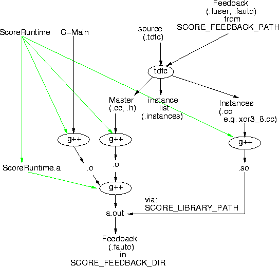

How to compile with tdfc
Last Update: 8/30/99
Concepts
First, you should be familiar with the following concepts:
- Master file -- each tdf operator will have a master file.
The master file represents the user-level interface to the function. It has a
.h file which the user can consult for interfacing, and a .cc file to
define its behavior. If the code runs on the processor or lacks an instance,
the proc_run function in the master file will define its operation. The
master file checks for the existence of the requested instance and hands
off data to the scheduler when the instance exists.
- Instance file -- each set of parameter bindings requires a
separate instance definition. Each instance files thus represents one
set of parameter bindings. The instance file holds all the data the
runtime scheduler needs to create the instance of the operator. Instance
files generated by tdfc are .cc files; they are compiled to shared library
(.so) files for use by the scheduler.
- Runtime -- a set of runtime support routines exist
providing a standard interface for interacting with operators (and
among them). The master and instance files will be linked against
the runtime definitions.
- Feedback -- when a SCORE operator runs it makes a record
of any parameter bindings used to request operators. This data is
stored in feedback files. These files are used as input to (later
runs of the) tdfc compiler to direct it to create the appropriate set
of instances.
- C-main -- to actually create a standalone executable
(a.out), you need a top-level main routine as per any C/C++ program.
This routine will instantiate (or ultimate call subroutines which
instantiate) tdf operators at the top level.
tdfc files
- Inputs:
- .tdf -- tdf source file
- .fuser -- user written feedback file
- .fauto -- feedback file written/updated by ScoreOperator during execution
- Outputs:
- .h -- master .h file
- .cc -- master .cc files
- _instance.cc, _#.cc etc. -- instance .cc files
- .instances -- list of instance names (names of .cc files
without the .cc extension)
compiler flow

tdfc reads in the .tdf files and any .fauto, .fuser files for the
functions appearing in the .tdf files. The SCORE_FEEDBACK_PATH
environment variable is used to define the set of directories
containing feedback data.
tdfc produces the master .h and .cc files for each operator. It
further produces instance .cc files for all instances specified in the
.fauto and .fuser files. Finally, it produces a .instances file with
the names of all the instances created.
Once created, the master files can be compiled into a .o file using a
C++ compiler and linking against the runtime routines.
The instance .cc files are compiled to .so files again using the C++
compiler and linking against the runtime routines.
Finally, the master .o files can be linked with the .o file
for the C-main to produce an a.out executable
using a standard binary linker.
Note that tdfc serves the role of both linker and compiler for tdf
files, so it is necessary to list all .tdf files needed to define
subordinate operators in the link.
e.g. If you define xor3 in xor3.tdf which depends upon xor in
xor.tdf, you will need to give tdfc both .tdf files
tdfc -ecc xor3.tdf xor.tdf
You may include multiple operators in one .tdf file, but that may make
file management and Makefiles difficult. tdfc starts with a call to
the C-pre-processor, so you are free to use #defines and #includes.
Randy observes that this allows you to include all the tdf files
necessary to build some operator using #include directives.
options
With no options given, tdfc will list its options. Important ones for
you to know:
- select target output:
- -ecc for C++ outputs
- -etdf for tdf (src2src) output -- mostly for debug
- verilog (or some such) should be supported in the future
- debug operators generated by tdfc -- these write verbose
debug code into the resulting .cc files (code which produces
output when the operator is executed):
- -dpr to insert verbose code into the proc_run state machine
to identify states and values as they fire.
- -dps to insert verbose code into the page_step state
machines to identify states and values as they fire.
- C-pre-processor directives: -E, -I, -D as per g++/cpp
- version number: -v, also note that every .cc and .h
file is tagged with the version number for the tdfc compiler that
produced it.
Additional options exist more for debugging tdfc:
- time/space statistics
- -pm -- print process memory usage at strategic points in program
- -pt -- print elapsed/delta time at strategic points in program
- other debug
- -b -- print out verbose parser reductions; also causes
coredump when errors are issued.
- -dshared -- include (expensive) check for shared nodes
- controlling memory usage
- -gc -- enable memory management
Makefiles
Notice that there are four phases of compilation required to produce a
running program with instances.
- compile tdfc -> .h, .cc, .instances
- compile master .cc files to .o files
- compile instance .cc files to .so files
- compile/link main master .o routines into a.out main routine
The instances are special for several reasons:
- need to be compiled to .so files
- different options to C++ compiler
- don't know which ones are needed until after runt tdfc on tdf
file
For these reasons it is inconvenient to put the make rules for all
four pieces in a single file. It is easiest to place the make rules
for the instance files in a separate Makefile.
For one good example, see:
/project/cs/brass/a/tools/brass/develop/SCORE/tdfc/Encode.example
- Makefile builds everything but instances
- Makefile.instance builds the shared library (.so) files
Notes:
- Makefile contains a dummy rule to ask Makefile.instance run after
tdfc has been run on all targets.
- Makefile has generic rules for building .cc from .tdf files
- To achieve proper linking, it is necessary to write
an explicit rule for a top level operator and its subsidiary
operator files.
- For this example, in order to have the clean target remove
everything generated by the compiler, it is necessary to
delete .cc files. Your user-written .cc files should be named
differently. As shown here, the user's .cc files live in .cc.hand
and there is a rule to copy them to .cc files during the build.
- Remember the .instances files contain a list of all the
instances generated during the tdfc compile; note that this
information is used subsequently by the recursive make call to
Makefile.instance to define the targets of that build.
- You can, of course, use
make -f Makefile.instance
to explicitly direct the compilation of instance .cc files.
However, note that the target of Makefile.instances depends on the
.instance files in existence at the time Makefile.instance is invoked.
- When you first compile a program and have no instances
requested by .fuser files (and have no .fauto feedback files), no
instances will be created. If no instances are created, the
instance make will fail and complain about the fact that it doesn't
know how to build .so. That's normal.
An alternate makefile/directory setup is shown in
/project/cs/brass/a/tools/brass/develop/SCORE/tdfc/cctest.
Here a separate directory is used for holding the user C-main .cc
files. This keeps tdf generated .cc files in a separate directory
from user written .cc files, but does require one to build executables
in two phases. A separate instance makefile is used here much like
the previous case.
Feedback files
The only difference between .fuser files and .fauto files is who
writes them. That is, .fauto files are written by the runtime system
while the user writes .fuser files by hand. This distinction prevents
the user from having anything changed behind his back and allows us to
delete (and eventually reorganize) .fauto files automatically.
The basic format is the same. Each is composed of a number of lines,
one line per desired instance. An instance line looks just like a
tdfc procedure call with the input and output parameters omitted and
the parameter values given as constants.
e.g.
consider a tdfc function
unsigned[n] xor3(param unsigned[6] n, input unsigned[n] a,
input unsigned[n] b, input unsigned[n] c)
Given this signature, its feedback file might look like:
xor3(8,,,);
xor3(9,,,);
xor3(10,,,);
Note that a, b, and c are input streams so their values are omitted.
n is the parameter, so it is given the necessary instance values.
At present, every instance requested during every execution generates
a line in an appropriate .fauto file (note that SCORE_FEEDBACK_DIR
tells the runtime where to write the .fauto files). At present, that
means a .fauto file may have a large number of duplicate instance
requests. tdfc takes care of determining the unique set
of instances. At present tdfc does not update the .fauto file after
identifying the duplicates, but this would be an easy change to make
at some point in the future.
You should also know that you only need to write a feedback record for the
highest enclosing operator to be used by your C-main(s). e.g if
xor3 is built on top of the operator xor, but you only want to use xor3's,
you don't need to specify an instance request for the xor case, only the
xor3. There is a potential subtlety here. When you do not have the
requisite xor3 instance, the xor code will get run and generate a feedback
record. In subsequent runs, the compiler will give you
both an xor and an xor3 instance even though you may not really need
the xor instance.
André DeHon